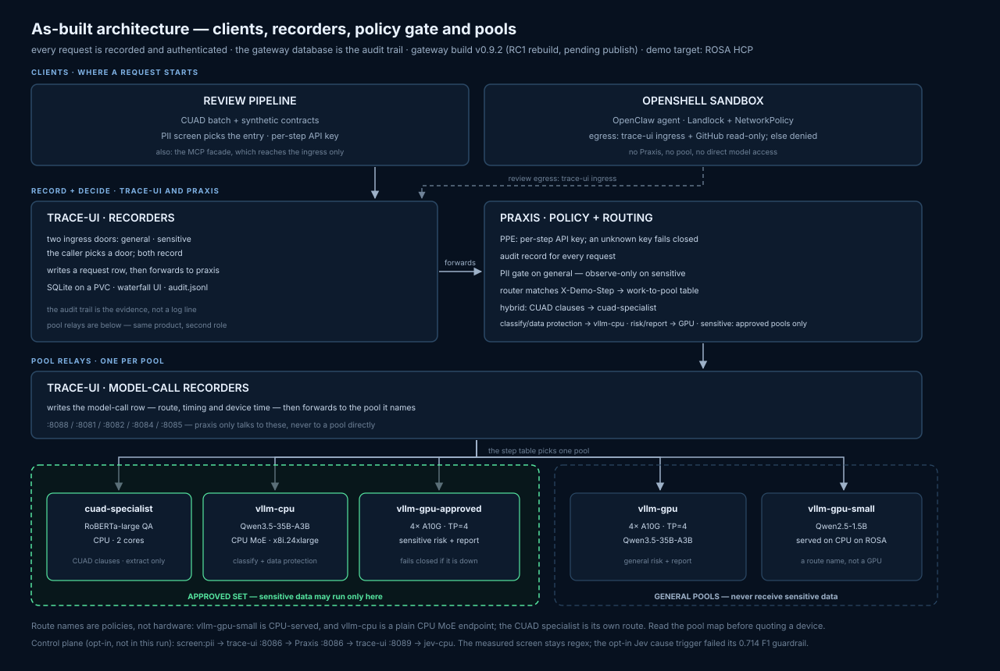
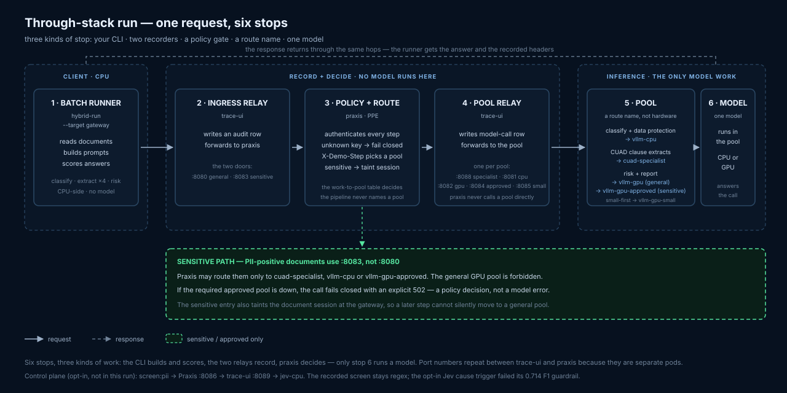
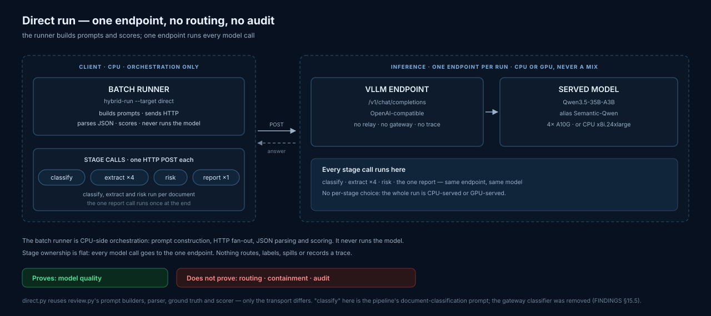

A legal-ops demo on hybrid CPU + GPU inference: sensitive documents are routed only to pools cleared for sensitive data, clause extraction runs on a CPU specialist, judgment escalates to a 35B MoE, and every request is routed and audited by Praxis.
Hundreds of agreements, many clauses per document. Most of the work is recall and quoting, not reasoning.
Sensitivity
Personal data, employee identifiers and commercial terms. The question is not only “can the model answer?” but “where may this text run?”
Judgment
Risk isn’t just finding the right sentence; it means applying a rulebook. The summary across all contracts builds on earlier clause and risk decisions, so mistakes carry forward. A confident answer can still be wrong.
Design rule: sensitivity is a constraint; high-volume work starts on CPU because it can wait.
Sensitivity decides which pools may serve. High-volume work starts on CPU; GPU time is reserved for judgment — risk and report — and fallback is visible.
What it does
Five jobs from contract to portfolio.
Ingest
Parse PDF/DOCX on CPU; keep section and character offsets so answers point back to the source. Adapter built; corpus measurement open.
Classify
Record contract type and initial term on CPU.
Retrieve
Pull passages for a named clause (e.g. termination) or portfolio question (e.g. highest risk) — within one contract or across the set.
Extract
RoBERTa returns the exact source span; it copies, so it cannot invent a clause.
Judge & report
Apply the risk rubric to extracted clauses; write the portfolio summary from those results.
The governance plane is not a pipeline step. Every call that reaches a model pool crosses trace-ui relays, Praxis authentication and policy, the work-to-pool table, and the audit store. The pipeline chooses only general or sensitive; Praxis owns the pool decision.
Two run shapes
One runner, two paths: direct and through-stack.
Same documents, prompts and scorer. Direct isolates the model; through-stack adds the governed path.
Direct
CLI→one model endpoint
Measures model quality only. No relay, Praxis, step label, pool choice or trace.
Through-stack
CLI→ingress relay→Praxis→pool relay→pool / model
Measures routing, governance, audit and cost. Same prompts; the path adds policy and records.
As built
The through-stack: one policy gate, one audit trail.

One request
Six stops, three kinds of work.

The direct stack
The direct stack: one endpoint, no governance record.
The batch runner calls one model endpoint. No relay, Praxis, step label, pool choice or trace — a model-quality reference, not a governance run.

Routing design
The application names sensitivity. Praxis owns the work-to-pool table.
Inside each review entry, the router matches a declarative X-Demo-Step header. The specialist is a model endpoint, not a router; a misroute is visible, not silently forwarded.
No classifier in the request path. The measured classifier labelled 1,200 of 1,201 steps MEDIUM. It was removed; the table encodes the routing that actually happened.
Step
General entry
Sensitive entry
classify
vllm-cpu
vllm-cpu
extract:termination :governing_law :liability_cap
cuad-specialist
cuad-specialist
extract:data_protection
vllm-cpu
vllm-cpu
risk, report
vllm-gpu
vllm-gpu-approved
RC1 · measured 2026-11-12
Two gateway checks: bind the key, gate the PII.
Key-to-step binding
validator/gci-step-key requires the authenticated subject to hold step:<stage> for the header's stage. A valid extract key cannot claim risk, report or another stage. The eval key is step-less and cannot name a review stage.
General-entry PII gate
validator/gci-pii-gate is the general entry's backstop. It reuses the client screen's pattern catalog; on a match it returns 403pii_detected before the request reaches the router or model. The sensitive and screen listeners stay observe-only because both must read the document.
Listener
Policy
PII scanner
What it does
general :8080
policy.yaml
gate (403)
Blocks PII before routing; backstop for a document sent to the wrong entry.
sensitive :8083
policy-sensitive.yaml
observe
Allows; records findings; marks the session sensitive.
screen :8086
policy-screen.yaml
observe
Allows; records findings; must read the document to decide.
It offloads the detection work, not the decision. The client calls screen:pii, reads the returned PII probability, then submits the review to general or sensitive. The screen has its own key, audit row and jev-cpu pool. It cannot run classify, extract, risk or report, and it is not part of the review run.
Measurement design
Same documents, same replay, same scoring. One variable at a time.
Cost: measured device time, CPU core-seconds, priced as a utilisation sweep — never one dollar figure.
Quality ground truth is CUAD — the Contract Understanding Atticus Dataset: 510 real commercial contracts with expert annotations for 41 clause categories. We score our held-out CUAD test subset (19 unique contracts). Sensitivity truth is the synthetic dataset's own label (41 sensitive / 159 not), never the pipeline's screen — that would be circular.
Finding 1 of 5 · governance
The hybrid keeps every sensitive step on approved pools. Every control leaks.
hybrid
0
round-robin
110
one-pool
247
Sensitive steps on unapproved pools, 200-document ROSA run. 247 = every sensitive step.
Controls: one-pool = all general GPU · round-robin = alternate CPU/GPU.
247/247
sensitive steps stayed on the approved set
0 errors · 0 fallbacks · 200/200 fully correct
It is a containment result, not a PII ground-truth result. “Sensitive” means the pipeline's screen said so. CUAD ships no PII labels. The count proves no request the screen called sensitive reached an unapproved pool — verified from the gateway's records, independently of the pipeline.
Finding 2 of 5 · quality by tier
A model that always answers is the worst failure shape for legal work.
19 unique real CUAD contracts the specialist never saw in training. A quote counts only if it contains the passage an expert marked.
The 1.5B: recall 1.0, precision ~0.15, F1 0.242. It finds something for every clause and is usually wrong. Risk accuracy falls to 0.395.
The 35B-A3B MoE: extraction F1 0.690, risk 0.632 with real discrimination, identical on CPU and 4×A10G because the weights are the same.
Model
Extract F1
Risk
Role
Qwen2.5-1.5B
0.242
0.395
small-first control
Qwen3.5-35B-A3B
0.690
0.632
judgment + synthesis
CUAD RoBERTa-large + MoE
0.780 (full-doc)
0.737
specialist extraction + MoE judgment
Majority baseline
—
0.684
always “high”
Specialist+MoE risk: 0.737 measured, 0.789 on a same-input GPU replay. Extraction is 0.780 full-document; top-5 retrieval reaches 0.800. Both are local direct runs, not through-stack.
What the specialist is
A CUAD-fine-tuned RoBERTa-large QA checkpoint served by FastAPI/uvicorn as an OpenAI-compatible endpoint on the 2-core CPU pool. One encoder pass returns a span copied from the contract, so it cannot invent a quote. It is a model endpoint, not a router.
What “majority baseline” means
Computed from the dataset's ground-truth risk labels: always predict the most common. Here 13 of 19 are truth-high, so always “high” scores 13/19 = 0.684. It is a floor, not a trained model.
Finding 3 of 5 · the risk gap
The risk mistakes came from extraction, not judgment.
19/19
documents in the two direct MoE runs where applying the rubric to the run's own clauses reproduces the model's risk answer
The MoE follows the rubric perfectly. Every risk miss starts with a missing or wrong clause. So the fix is better extraction, not a better prompt.
With the CUAD-trained specialist extracting, same MoE judging: risk rises to 0.737 measured, above the 0.684 majority baseline. A GPU re-run on the same inputs scores 0.789.
Where the specialist is still weak
governing law
perfect
audit rights
perfect
caps on liability
0.308
CUAD test-set F1. Next step, not yet measured: send easy clause types to the specialist and liability caps to the MoE.
Finding 4 of 5 · direct parity
CPU is a latency choice, not a quality compromise.
Same weights, same answers, 9.8× slower on CPU. That is the trade the policy makes deliberately: batch volume on CPU, judgment and interactive work on GPU.
CPU is not a free pass on judgment. The 1.5B CPU baseline extracts well (F1 1.0) but scores 0.395 on risk and 0.212 on report. The capable 35B-A3B on CPU gets the quality — at 9.8× the GPU time.
These direct runs skip governance. All 247 sensitive steps go straight to one endpoint — no gateway, PII check, or sensitive-pool routing. They compare CPU and GPU quality, not whether sensitive work stayed on approved pools.
Finding 5 of 5 · GPU economics
Judgment is worth a GPU. Extraction work is not.
0.265
GPU-s/doc · hybrid
judgment only on GPU · 806.59 s wall · 0 violations
0.981
GPU-s/doc · one-pool
all steps on GPU · 201.89 s wall · 247 violations
These are total GPU costs for two configurations, not a judgment-vs-extraction split. 0.265 GPU-s/doc covers the hybrid's 201 judgment steps; 0.981 covers one-pool's 1,201 steps. The 0.716 difference is the extraction/classify work moved to CPU.
The governed hybrid uses ~3.7× less total GPU time than the all-GPU control while keeping 200/200 quality. It also records 32.555 CPU core-s/doc.
Read cost as a sweep, not a single bill. GPU-seconds and CPU core-seconds are measured; the dollar figure depends on cloud list vs owned hardware and utilisation.
The demo
Three beats: containment, failure, economics.
1 · Containment
Replay the ROSA hybrid run. Point at 247/247 sensitive steps on approved pools and 0 violations. Do not switch to the one-pool control for this beat.
2 · Pull the plug
Kill the GPU pool mid-run. The general entry degrades visibly; the sensitive entry returns an explicit failure and never spills. Use the recording if the cluster is down.
3 · Economics
Stay on the hybrid replay. Show 0.265 GPU-s/doc vs 0.981 for one-pool, with 200/200 quality and 83.3% CPU-served.
Say what the page is. A replay is a recording, not live governance. “This is what the measured run recorded.” The live outage is a separate beat. The CUAD appendix is model-quality evidence; its view A is direct and has no governance.
Commands and the full script: docs/stage-runbook.md · dashboard: cd demo && make dashboard-up → 127.0.0.1:8099
Claim boundaries
What is measured, and what is newer than the quoted run.
Two entries, approved-only failover, and a gateway-owned audit trail — not a prompt instruction.
2 · CPU is for volume; GPU is for judgment.
The same 35B weights score identically on both; CPU is 9.8× slower. Hybrid keeps quality and cuts measured GPU time.
3 · Extraction quality decides risk quality.
The rubric is followed 19/19. Every miss traces to the clauses the model was given.
4 · The economics win is GPU time, not speed.
Hybrid uses 0.265 GPU-s/doc vs 0.981 for one-pool, but it is slower in wall-clock. The measured claim is less GPU for the same quality, with containment.
Appendix · where to look
Everything quoted is reproducible from the checkout.
Records
FINDINGS.md — the measurement record; read before quoting a number.
runs/rosa-200-2026-11-11-praxis-routes/ — current matrix.